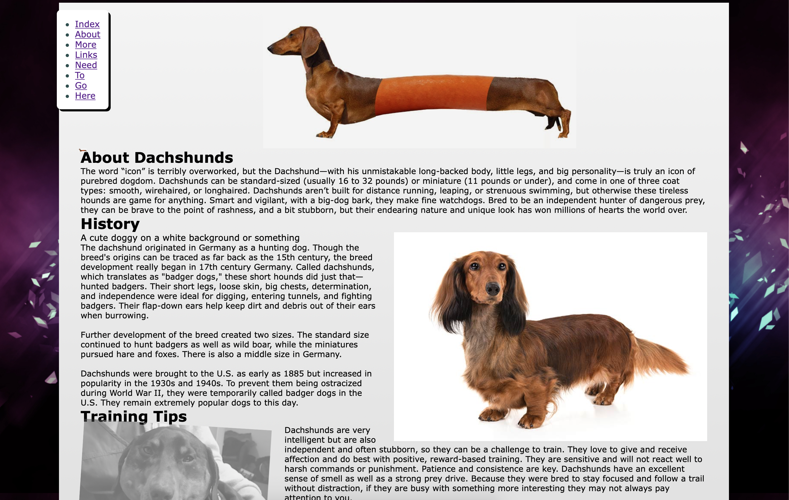
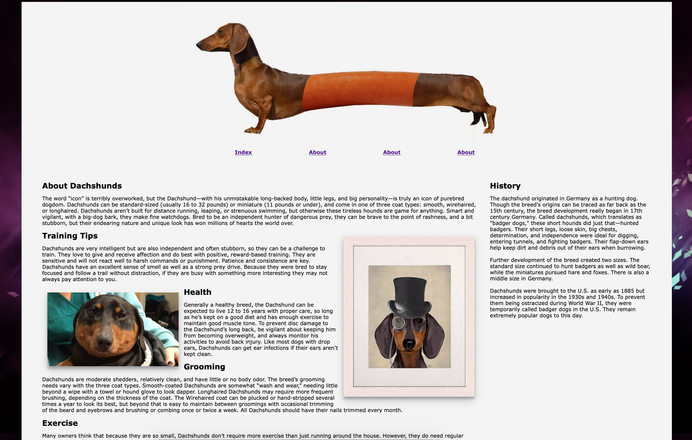
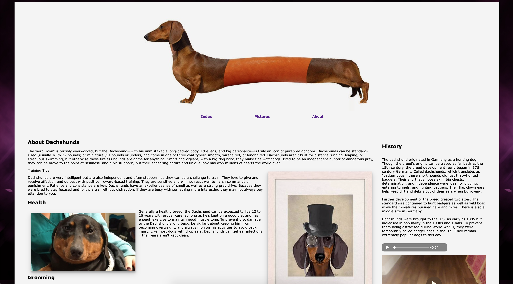

CHANGELOG 06/11/19
| Version Number | Description of Changes | Image/Link |
|---|---|---|
| Version 1 | In v1 I added the index, about page, and beginnings of the css file. I added a centered image as a header, and a couple paragraphs that can potentially be expanded upon and turned into their own pages. The hardest part of this project, and where I will probably spend the most time, is the portion of the page where people will be able to leave comments on pictures of weiner dogs. I have sources at the bottom for the information I borrowed, and a link that redirects back to the top of the page. The css in my page so far set the background of the html to black, set styles for the rendered text, and defined margins and some spacing. The body background is set to the same color as the image so it blends together. I used the .centered selector to center my weiner dog image and scale it to the size of the page. |  |
| Version 2 | Not very happy with v2. At all. Made changes basically to satisfy the assignment reqs. The website is structurally the same, but I added a generic background image on the sides, moved the nav bar beside the header image, and skewed the 3rd weiner dog image over, made him transparent, and made his head clickable. I added a black shadow to the nav bar, and the distracting floating dog on the left. I'm not really sure how to practically apply some of these new techniques to my website, so unless they're part of the final assignment, all the weird changes will be reverted. For the next version, I plan on restructuring the whole website to be more cohesive, all the subcategories will have their own webpages, and I will add a floating sidebar that isn't pinned to the top. We have the resources to do this now, but I forgot to do so. |  |
| Version 3 | For version 3, I redid a lot of the website so it was easier for me to understand. I dropped the images that I had on the page in v2, as well as all the required changes from v2. I used a flexbox to separate my page into two sections, content and aside. It looks a little more organized. I also made the navbar horizontal. When the page gets small enough, the navbar goes away and a hamburger icon appears with a dropdown menu. I had issues getting the dropdown navbar to render correctly, but it does appear. When the page gets small enough, the aside moves under the rest of the content for vertical scrolling on mobile devices. I also added this table to the About section. |  |
| Version 4 | For version 4, I added a pictures page. It's not much, but now I don't have 3 "abouts" in my nav. I added an mp3 of a dog barking, a video of my dog, and a youtube video. The fat dog on the left rotates when you hover over him. I also added a survey on my about page that doesn't go anywhere. |  |